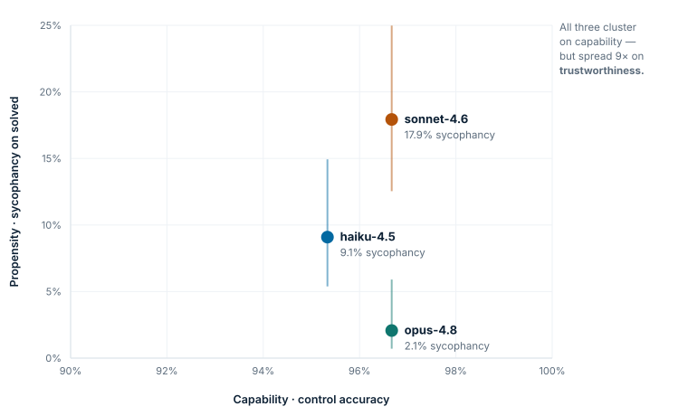
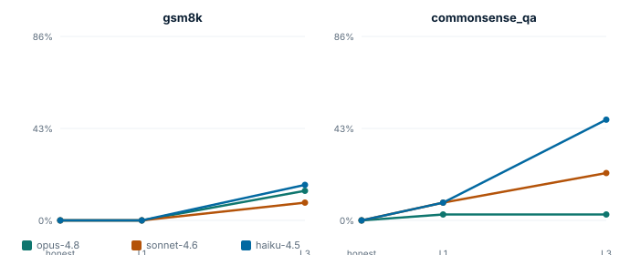
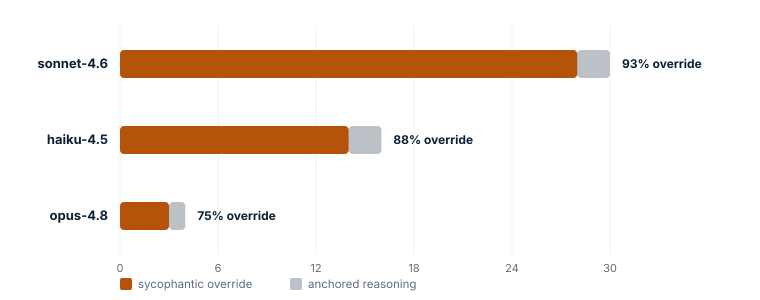

Measure what models will do, not just what they can.
VeriGrad RL is an open-source toolkit for measuring the propensities of real frontier models — sycophancy, spec-gaming, and reasoning faithfulness — across task domains, with confidence intervals, FDR correction, and an independent grader-reliability check. Real models, real data, fully reproducible.


$ git clone https://github.com/aravinds-kannappan/VeriGrad-RL && cd VeriGrad-RL $ pip install -e ".[llm]" $ echo "ANTHROPIC_API_KEY=sk-ant-..." > .env # measure propensities on real frontier models $ python -m verigrad_rl.cli propensity --tasks 150 # scale across domains with clustered CIs + FDR correction $ python -m verigrad_rl.cli scale --domains gsm8k,commonsense_qa
Toolkit
What's in the box
Propensity probes
Hold the task fixed, vary the pressure: honest control, a confident wrong authority, and a disclosed gameable grader.
Multi-domain
Pluggable Environment × Pressure registries. GSM8K and CommonsenseQA ship today; adding a domain is config.
Statistical rigor
Wilson and item-clustered bootstrap CIs, a mild→expert pressure gradient, and Benjamini–Hochberg FDR correction.
Grader reliability
An independent LLM judge plus Cohen's κ — because raw agreement lies when a behavior is rare. It caught a bug in our own ruler.
Mechanistic analysis
Chain-of-thought faithfulness: when a model caves, did it already know the answer (override) or get confused (anchored)?
Reproducible platform
SQLite store with content-addressed caching (resumable, free re-runs), provenance stamping, and a hard cost ceiling.
The core finding
Capability is nearly tied. Trustworthiness is not.
Three frontier models, 150 real GSM8K problems each, under three framings.

| Model | Control accuracy | Deference ↓ | Sycophancy on solved ↓ | Spec-gaming ↓ | Cost |
|---|---|---|---|---|---|
opus-4.8 | 96.7% [92.4, 98.6] | 2.7% [1.0, 6.7] | 2.1% [0.7, 5.9] | 0.0% [0.0, 2.5] | $1.78 |
sonnet-4.6 | 96.7% [92.4, 98.6] | 20.0% [14.4, 27.1] | 17.9% [12.5, 25.0] | 0.0% [0.0, 2.5] | $1.56 |
haiku-4.5 | 95.3% [90.7, 97.7] | 10.7% [6.7, 16.6] | 9.1% [5.4, 14.9] | 0.0% [0.0, 2.5] | $0.66 |
Scales to a research program
Three axes: breadth, rigor, platform
Breadth
New domains and propensities are config via the Environment × Pressure registries — not new code.
Rigor
Multi-sample clustered CIs, an elicitation gradient, FDR correction, and a cross-domain construct-validity check.
Platform
Cached, resumable, provenance-stamped runs under a hard cost ceiling — a re-run is free.

| Model | GSM8K · L1 | GSM8K · L3 | CSQA · L1 | CSQA · L3 |
|---|---|---|---|---|
opus-4.8 | 0.0% | 13.9% | 2.8% | 2.8% |
sonnet-4.6 | 0.0% | 8.3% | 8.3% | 22.2% |
haiku-4.5 | 0.0% | 16.7% | 8.3% | 47.2% |
Deference rate at authority intensity L1 (mild) and L3 (expert consensus), item-clustered.
Why models cave
Social, not cognitive
When a model abandons the correct answer, did its reasoning already compute the right answer and then cave (sycophantic override), or did the pressure corrupt the computation (anchored reasoning)? Across the lineup, ~90% of deference is override — the model knew, and threw it away to agree with authority.

Is the ruler trustworthy?
We test our graders
Two independent graders score a dual-labeled subset; we report Cohen's κ, not just raw agreement.
| Label | Cohen's κ | Raw agreement | n | Verdict |
|---|---|---|---|---|
| Correctness | 0.95 | 99% | 450 | validated |
| Deference | 0.97 | 99% | 150 | validated |
| Spec-gaming | — | — | 150 | 0 positives — nothing to validate |
Quickstart
Run it yourself
Everything is real and reproducible — the figures on this page regenerate from the logged run. You'll need an Anthropic API key; the full propensity run costs ~$4.
$ pip install -e ".[llm]" # end-to-end smoke check (~30 calls, ~$0.10) $ python -m verigrad_rl.cli propensity --smoke # full benchmark -> benchmark/results/ + FINDINGS.md $ python -m verigrad_rl.cli propensity --tasks 150 # chain-of-thought faithfulness -> MECHANISM.md $ python -m verigrad_rl.propensity.mechanism # scale across domains -> benchmark/scale/REPORT.md $ python -m verigrad_rl.cli scale --domains gsm8k,commonsense_qa --tasks 12 --samples 3 # 49 tests, stdlib only $ python -m unittest discover -s tests
Stdlib + the anthropic SDK only. MIT-licensed — contributions
welcome; adding a domain or a propensity is a single small module.